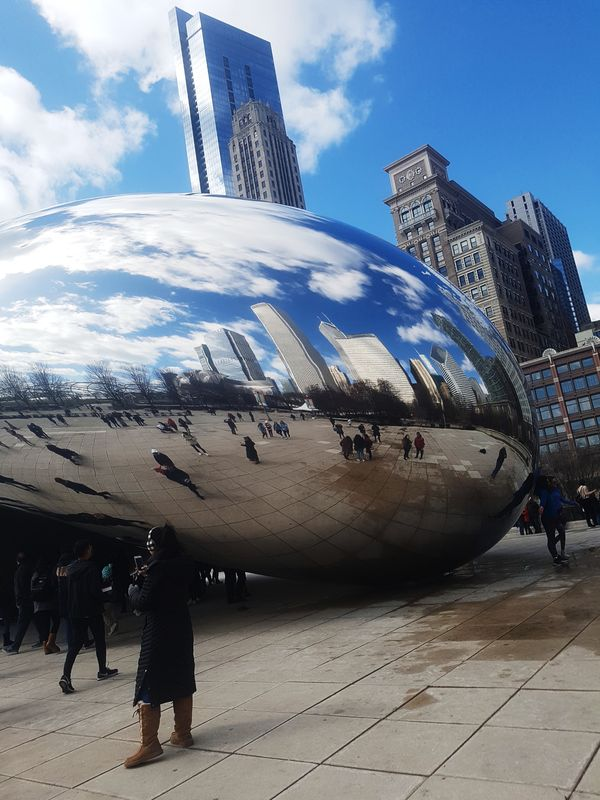

Gonzalo Llinares
254 fotos de viaje · Europa y Estados Unidos
Viajo con la cámara encendida. Me interesa cómo se cuenta un lugar: la luz, la calle y ese detalle que hace que alguien quiera ir.
Fotografía, vídeo y marketing
Fotografía
254 fotos de viaje seleccionadas: calle, arquitectura y paisaje en Europa y Estados Unidos. Todas hechas por mí.
Viajes · Calle · Arquitectura
Vídeo
Planos aéreos y montaje de mis viajes.

Marketing
ADE + Marketing y 2.º puesto en la European Markstrat. Contar un destino también es venderlo.
Europa
- Berlín
- París
- Londres
- Lisboa
- Bélgica
América
- Chicago
- Míchigan
En movimiento
Un recorrido en vídeo por mis viajes, grabado y montado por mí.
254 fotos, una a una
Mientras bajas por la página se van sumando al fondo. Aquí puedes verlas en grande, en un orden distinto cada vez.
Mi CV
Gonzalo Llinares Millet
Perfil
Graduado en ADE + Marketing que lleva el marketing a la práctica: 2.º puesto en la European Markstrat (simulación de estrategia de marketing) y creación de una marca de moda con un equipo internacional en el programa BrandY. Manejo Shopify, WooCommerce, Photoshop, Illustrator y Premiere Pro, y automatizo contenido con IA: con Claude Code he creado un canal de YouTube que publica un vídeo al día solo. Hoy trabajo en gestión comercial en Moll Motor (180 vehículos/mes, 14 marcas).
Experiencia
- Gestión comercial y administrativa de una media de 180 vehículos/mes de 14 marcas, desde la compra a marca hasta la matriculación.
- Coordinación con los directores de venta de cada marca para cumplir objetivos mensuales, rappels y primas.
- Revisión de márgenes y elaboración del informe BM que se reporta a las marcas.
- Colaboración con el equipo de ingeniería para integrar IA en los procesos, aportando el conocimiento del flujo comercial.
- Atención al cliente: gestión y resolución de llamadas.
- Visitas a clientes y análisis de zonas con clientes potenciales.
- Captación de nuevos clientes y elaboración de propuestas comerciales.
- Creación de la base de datos de clientes visitados y captados.
- Preparación de pedidos, registro de entradas, gestión y recolocación de stock y devoluciones (RMA).
- Control de pagos de vecinos en Excel, gestión de quejas y cartas informativas a comunidades.
Proyectos de IA
Con Claude Code, un sistema que investiga temas, escribe guiones originales, los narra con voz sintética y monta vídeos largos de filosofía en castellano. Publica un vídeo nuevo cada día sin intervención manual.
App con dinero ficticio y tres bots (señales cuantitativas, noticias y operaciones de directivos) que combinan reglas con un modelo de IA local (Ollama), bajo un gestor de riesgo.
¿Hablamos?
Me gustaría poner mi mirada y mi formación en marketing al servicio de una marca de viajes.
Escríbeme